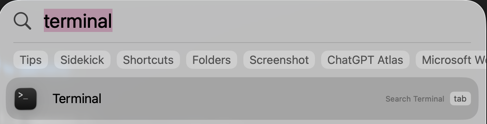
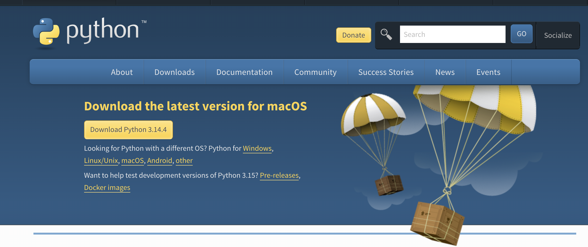

Прежде чем готовить — нужна кухня. Прежде чем писать код — нужно установить инструменты. Этот урок — про установку всего, что понадобится в курсе. Ничего сложного: скачать, установить, проверить. 15-30 минут — и рабочее место готово.
┌──────────────────────────────────────────────────────────┐
│ ЧТО НУЖНО УСТАНОВИТЬ │
│ │
│ 1. Python — язык программирования │
│ Все программы в курсе написаны на Python. │
│ Без него ничего не запустится. │
│ │
│ 2. VS Code — редактор кода │
│ В нём ты будешь писать и редактировать код. │
│ Как Word для текстов, но для программ. │
│ │
│ 3. Терминал — уже есть на компьютере │
│ Нужно только найти и открыть. │
│ Подробно разберём в следующем уроке (1.1). │
│ │
└──────────────────────────────────────────────────────────┘
Python — язык программирования. Это как иностранный язык, на котором ты «разговариваешь» с компьютером. Пишешь команды на Python → компьютер их выполняет. Именно на Python написаны почти все AI-инструменты.
Открой терминал:
Cmd + Пробел, набери Terminal, нажми EnterWin, набери PowerShell, нажми Enter
Набери команду и нажми Enter:
python3 --version
Если видишь что-то вроде Python 3.11.5 или Python 3.12.0 — Python уже установлен. Переходи к Шагу 2.
Если видишь ошибку — устанавливаем.
Способ 1 (самый простой): через сайт

.pkg — открой егоПароль обычно не показывается в терминале — не пугайся, он просто невидимка. Набирай как обычно и жми Enter.
Способ 2: через Homebrew (если знаешь, что это)
brew install python3
Проверка:
Закрой терминал и открой заново (это важно — чтобы терминал увидел новый Python). Набери:
python3 --version
# Должно показать: Python 3.11.x или 3.12.x или 3.13.x
.exe┌─────────────────────────────────────────────┐
│ Install Python 3.x.x │
│ │
│ ☑ Add python.exe to PATH ← ЭТУ ГАЛОЧКУ! │
│ │
│ [Install Now] │
└─────────────────────────────────────────────┘
Проверка:
Закрой PowerShell и открой заново. Набери:
python --version
# Должно показать: Python 3.11.x или 3.12.x или 3.13.x
На Windows команда python (без тройки). На macOS — python3.
Ошибка: "python: command not found" или
"'python' is not recognized"
macOS:
→ Попробуй python3 вместо python
→ Если не помогло — переустанови Python с сайта
Windows:
→ Переустанови Python. На первом экране ОБЯЗАТЕЛЬНО
поставь галочку "Add python.exe to PATH"
→ После установки ЗАКРОЙ PowerShell и открой заново
Ошибка: показывает Python 2.x.x
→ Это старая версия. Нужен Python 3.
→ macOS: набери python3 вместо python
→ Windows: переустанови с сайта (последнюю версию)
pip — менеджер пакетов для Python. Он устанавливает дополнительные библиотеки. Как App Store для приложений — но для Python-библиотек.
Аналогия. Python — это телефон. pip — это App Store. Библиотеки (anthropic, openai, flask) — это приложения. Телефон работает и без приложений, но с ними — гораздо полезнее.
pip устанавливается автоматически вместе с Python. Проверь:
# macOS:
pip3 --version
# Пример: pip 23.2.1 from /usr/lib/python3/dist-packages/pip
# Windows:
pip --version
# Пример: pip 23.2.1 from C:\Python312\Lib\site-packages\pip
Ошибка: "pip: command not found"
macOS:
→ Попробуй pip3 вместо pip
→ Если не помогло:
python3 -m pip --version
Windows:
→ Попробуй:
python -m pip --version
→ Если не помогло — переустанови Python
с галочкой "Add python.exe to PATH"
Давай установим первую библиотеку — чтобы убедиться, что pip работает:
# macOS:
pip3 install python-dotenv
# Windows:
pip install python-dotenv
Если видишь Successfully installed python-dotenv-x.x.x — всё работает.
Что мы установили:
python-dotenv — библиотека для чтения файлов .env
Понадобится в уроке 2.3, когда будем работать с API-ключами.
Подробно про .env — в уроке 1.6.
Ошибка: "Permission denied"
→ Добавь --user в конце:
pip3 install python-dotenv --user
Ошибка: "Could not find a version that satisfies the requirement"
→ Проверь, правильно ли написано имя пакета
→ Проверь подключение к интернету
Ошибка: "externally-managed-environment" (новые версии macOS)
→ Создай виртуальное окружение (объяснение ниже)
или добавь --break-system-packages:
pip3 install python-dotenv --break-system-packages
VS Code (Visual Studio Code) — бесплатный редактор кода от Microsoft. В нём ты будешь писать программы. Можно писать и в Блокноте, но VS Code подсвечивает код цветами, подсказывает ошибки и имеет встроенный терминал.
Аналогия. Можно писать текст в Блокноте. Но в Word удобнее: есть проверка орфографии, форматирование, оглавление. VS Code — это «Word для кода».
.dmg, перетащи VS Code в папку Applications.exe, нажимай Next → Next → InstallCtrl+Shift+X (Windows) / Cmd+Shift+X (macOS)Это расширение даёт:
В VS Code ты работаешь с папками, а не с отдельными файлами:
VS Code имеет встроенный терминал — не нужно переключаться между окнами:
Ctrl+`)python3 my_script.pyДавай убедимся, что всё работает вместе.
# macOS:
mkdir -p ~/Documents/Projects/ai-academy
cd ~/Documents/Projects/ai-academy
# Windows:
mkdir C:\Users\ТвоёИмя\Documents\Projects\ai-academy
cd C:\Users\ТвоёИмя\Documents\Projects\ai-academy
code .
# Точка означает "текущую папку"
# Если команда code не работает — открой VS Code вручную → File → Open Folder
hello.pyВ VS Code: правый клик в панели файлов → New File → назови hello.py
Напиши в файле:
# hello.py — мой первый скрипт
# print() — команда, которая выводит текст на экран
print("Привет! Python работает!")
# Давай посчитаем
result = 2 + 2
print(f"2 + 2 = {result}")
# f перед кавычками — это f-строка
# Она позволяет вставлять переменные прямо в текст
# {result} заменится на значение переменной result
name = "студент AI Academy"
print(f"Добро пожаловать, {name}!")
В терминале VS Code (или в обычном терминале):
# macOS:
python3 hello.py
# Windows:
python hello.py
Привет! Python работает!
2 + 2 = 4
Добро пожаловать, студент AI Academy!
Если видишь это — Python работает. Но мы пришли сюда ради AI. Давай сделаем ещё один шаг.
Это бонус — чтобы увидеть, ради чего всё это. Установим библиотеку для работы с Claude и зададим ему вопрос прямо из Python.
# macOS:
pip3 install anthropic
# Windows:
pip install anthropic
sk-ant-)ask_ai.py# ask_ai.py — твой первый разговор с AI из кода
from anthropic import Anthropic
# Вставь свой ключ вместо sk-ant-...
# (в уроке 2.3 научишься хранить ключ безопасно)
client = Anthropic(api_key="sk-ant-api03-ВСТАВЬ-СВОЙ-КЛЮЧ-СЮДА")
response = client.messages.create(
model="claude-haiku-4-5", # быстрая и дешёвая модель
max_tokens=200, # максимум слов в ответе
messages=[{
"role": "user",
"content": "Привет! Я только начинаю изучать AI. Скажи что-нибудь вдохновляющее в 2-3 предложениях."
}]
)
# Выводим ответ Claude
print(response.content[0].text)
# macOS:
python3 ask_ai.py
# Windows:
python ask_ai.py
Claude ответит что-то вроде:
Здорово, что ты начинаешь этот путь! AI — это не магия,
а инструмент, который может освоить каждый. Ты уже сделала
первый шаг — и это самое важное.
Ты только что поговорила с AI из собственного кода. Не через сайт, не через приложение — через программу, которую написала сама. Весь курс — это путь к тому, чтобы делать с AI всё, что захочешь.
Не получилось? Это нормально — подробно разберём API в уроке 2.3.
Главное сейчас: Python работает, и ты видела, что AI можно вызвать из кода.
Если нет API-ключа — пропусти этот шаг. Вернёшься к нему в уроке 2.3.
Ошибка: "No such file or directory: 'hello.py'"
→ Ты не в той папке. Проверь:
pwd (macOS)
cd (Windows — покажет текущую папку)
→ Перейди в папку с файлом:
cd ~/Documents/Projects/ai-academy (macOS)
cd C:\Users\ТвоёИмя\Documents\Projects\ai-academy (Windows)
Ошибка: "SyntaxError: invalid character"
→ В коде есть «умные» кавычки (« » или " " вместо " ")
→ Это бывает, если скопировал из мессенджера или Word
→ Перенабери кавычки вручную в VS Code
Ошибка: "IndentationError: unexpected indent"
→ В Python отступы важны. Убедись, что строки print()
начинаются от левого края (без пробелов в начале)
При установке библиотек через pip иногда возникают конфликты: одному проекту нужна версия 1.0, другому — версия 2.0. Виртуальное окружение решает эту проблему — оно создаёт изолированную «песочницу» для каждого проекта.
Аналогия. Представь, что у тебя два заказа: один клиент хочет синие шторы, другой — красные. Ты не смешиваешь их в одну коробку — каждый заказ в своей. Виртуальное окружение — отдельная «коробка» для каждого проекта.
Сейчас это не критично — но когда в уроке 2.3 начнём устанавливать библиотеки для AI, будет полезно.
# macOS:
python3 -m venv venv
# Создаёт папку venv/ с изолированным Python
# python3 — наш Python
# -m venv — запустить модуль venv (создатель окружений)
# venv — имя папки (можно назвать как угодно, но venv — стандарт)
source venv/bin/activate
# Активирует окружение
# В начале строки терминала появится (venv) — значит, работает
# Windows:
python -m venv venv
venv\Scripts\activate
# В начале строки появится (venv)
Без окружения:
katya@macbook ai-academy %
С окружением:
(venv) katya@macbook ai-academy %
^^^^^ — вот эта метка
deactivate
# Метка (venv) исчезнет
Когда окружение активировано — все pip install устанавливают библиотеки только в эту папку, не трогая систему.
┌──────────────────────────────────────────────────────────┐
│ ЧЕК-ЛИСТ ГОТОВНОСТИ │
│ │
│ ☐ Python установлен │
│ Проверка: python3 --version (или python --version) │
│ Результат: Python 3.11+ или 3.12+ или 3.13+ │
│ │
│ ☐ pip работает │
│ Проверка: pip3 --version (или pip --version) │
│ Результат: pip 23.x или новее │
│ │
│ ☐ VS Code установлен │
│ Проверка: открывается, расширение Python установлено │
│ │
│ ☐ Первый скрипт запущен │
│ Проверка: python3 hello.py показывает "Привет!" │
│ │
│ ☐ (Бонус) AI ответил из кода │
│ Проверка: python3 ask_ai.py — Claude написал ответ │
│ │
│ Всё готово? → Переходи к уроку 1.1 (Терминал) │
│ │
└──────────────────────────────────────────────────────────┘
Задание 1: Проверь своё окружение
Открой терминал и выполни по очереди:
python3 --version
pip3 --version
code --version
Запиши результаты. Если какая-то команда не сработала — вернись к соответствующему разделу урока и пройди установку заново.
Задание 2: Создай проект с виртуальным окружением
test-projectpython3 -m venv venvpip install requestspip listdeactivateЗадача 1: Ты набираешь python3 --version в терминале и видишь ошибку "command not found". Что это значит и что делать?
Задача 2: Зачем нужно виртуальное окружение? Почему нельзя просто ставить все библиотеки глобально?
Задача 3: Ты активировал виртуальное окружение и установил библиотеку openai. Потом закрыл терминал, открыл снова и набрал python3 -c "import openai". Получил ошибку. Почему?
| Термин | Что значит |
|---|---|
| Python | Язык программирования. На нём написаны почти все AI-инструменты. Бесплатный |
| pip | Менеджер пакетов Python. Устанавливает библиотеки командой pip install имя |
| Библиотека (пакет) | Готовый код, который кто-то написал. Устанавливаешь через pip и используешь в своих программах |
| VS Code | Бесплатный редактор кода от Microsoft. Подсвечивает синтаксис, подсказывает ошибки |
| Терминал | Текстовый интерфейс для управления компьютером. Подробно — в уроке 1.1 |
| PATH | Список папок, где компьютер ищет программы. Если Python не в PATH — терминал его не найдёт |
| Виртуальное окружение (venv) | Изолированная «песочница» для проекта. Библиотеки ставятся только туда, не мешая другим проектам |
| Расширение (extension) | Дополнение для VS Code, которое добавляет функции (подсветка Python, автодополнение) |
| Скрипт | Файл с кодом. Скрипт на Python — файл с расширением .py |
Рабочее место готово: Python установлен, редактор настроен, первый скрипт запущен. В следующем уроке — терминал: научишься перемещаться по папкам, создавать файлы и запускать программы через командную строку. Это основной инструмент для всего курса.